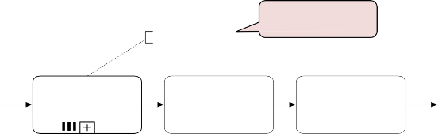
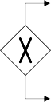

Unit 3
1

Expanded Sub-process
Task
Collapsed Sub-process
Activities
An activity in a process can be decomposed into a “sub-process”
Use this feature to:
Improve understanding by breaking down large models
Identify parts that should be:
repeated
executed multiple times in parallel
interrupted, or
compensated
2

Invoice received
Process Invoice
Process Payment
Process Invoice
no
mismatches
Enter Invoice / Credit Note Details
Check Invoice Mismatches
mismatch
exists
Block Invoice
3


Acquire raw materials
Ship and invoice

Solution
5

6

Process Inquiry and Quote
Receive and Validate Order
...
Level 3
Enter Order
Check Credit
...
Order received
Level 4
Check Credit Record
Credit available
Clear Order
Credit not available
Contact customer account rep.
Level 5
...
7

Business
process
“is
predecessor of”
Chain of (high-level) processes an organisation performs in order to achieve a business goal, e.g. deliver a product or service to the market.
8

9

Use sub-processes when the model becomes too large:
Hard to understand
Increased error probability
Level 1 – start with value chain
Level 2 – add main decisions and handoffs (lanes) Level 3+ – add procedural aspects:
Parallel gateways
Data objects, data stores
Exception handling
And as much detail as is relevant
Decomposition drivers:
Logical: group elements meaningfully (e.g. common business object)
Structural: up to 30 nodes (activities, events, gateways)
10

By default, a sub-process is “embedded” into its parent process (i.e. it is stored within the same file)
In order to maximize reuse, it is possible to “extract” the sub-process and store it as a separate file in the process model repository
Such a sub-process is called “global” model, and is invoked via a “call” activity
Normal Activity Call Activity
11

Call activity is the default choice to maximize reusability 12

Sequence flows cannot cross sub-process boundaries
Use start/end events
Message flows can cross sub-process boundaries
To indicate messages emanating from/incoming into the sub-process
Start with at least one start event
If multiple, first occurring will trigger the sub-process
Finish with at least one end event
The sub-process will complete once all tokens have reached an end event. May need an (X)OR-split after sub-process to understand what end event(s) have been reached
13

Dr.R.Umarani 14
Assistant Professor
 3.Rework and Repetition
3.Rework and Repetition
Structured cycle (SESE component)
XOR-join: entry point XOR-split: exit point
15

Task Loop
Sub-process Loop
BPMN also provides the Activity loop construct to allow the repetition of a task or sub-process
16

Completion
condition
Ministerial Enquiry received
Assign Ministerial Enquiry
Investigate Ministerial Enquiry
Until Response is approved
Finalise Ministerial Response
Prepare Ministerial Response
Review Ministerial Response
Enquiry Response
investigated reviewed
Ministerial Enquiry finilized
Must have a
decision activity
17

a.Parallel Repetition
Sequential Repetition
The Instances of the loop activity are executed one after the other.
Eg. Quote from suppliers
Multi-instance activity
An activity that is executed multiple times concurrently
18

In procurement, typically a quote is to be obtained from all preferred suppliers (assumption: five preferred suppliers exist). After all quotes are received, they are evaluated and the best quote is selected. A corresponding purchase order is then placed.
19

Obtain Quote from Supplier A
Obtain Quote from Supplier B
Obtain Quote from Supplier C
Select best quote
Place PO
Obtain Quote from Supplier D
Obtain Quote from Supplier E
Procurement
...
...
20

Multi-Instance Task

Multi-Instance Sub-process
The multi-instance activity provides a mechanism to indicate that an activity is executed multiple times concurrently
Useful when the same activity needs to be executed for multiple entities or
data items, such as:
Request quotes from multiple suppliers
Check the availability for each line item in an order separately
Send and gather questionnaires from multiple witnesses in the context of an insurance
claim
21


cardinality
For each supplier
Obtain Quote
Select best quote
Place PO
... ...
22

After a car accident, a statement is sought from the witnesses that were present, in order to lodge the insurance claim. As soon as the first two statements are received, the claim can be lodged to the insurance company without waiting for the other statements.
23
Data collection
denotes a set of data objects of the same type (determines cardinality of multi-instance activity)
Multi-instance pool denotes multiple participants of the same type
Completion condition indicates minimum number of instances required to complete (≤ cardinality)
24

The ad-hoc sub-process contains activities to be executed in arbitrary order and number of times
Until all KPIs reviewed
May define order of sub-set of activities by sequence Flow Can be used in an early version of a process
Diagram when the order of execution is still unknown
25

Army recruitment
A typical army selection process starts by shortlisting all candidates’ applications. Those shortlisted are then called to sit the following tests: drug and alcohol, eye, color vision, hearing, blood, urine, weight, fingerprinting and doctor examination. The color vision can only be done after the eye test, while the doctor examination can only be done after color vision, hearing, blood, urine and weight have been tested. Moreover, it may be required for some candidates to repeat some of these tests multiple times in order to get a correct assessment, e.g. the blood test may need be repeated if the candidate has taken too much sugar in the previous 24 hours. The candidates that pass all tests are asked to sit a mental exam and a physical exam, followed by an interview. Only those that also pass these two exams and perform well in the interview can be recruited in the army.
26
27


In BPMN, events model something instantaneous happening during the execution of a process
They affect the process flow:
Start
Intermediate
End
28

Start
Intermediate
End
Untyped Event – Indicates that an instance of the process is created (start) or completed (end), without specifying the cause for creation/completion
Start Message Event – Indicates that an instance of the process is created when a message is received
End Message Event – Indicates that an instance of the process is completed when a message is sent
Intermediate Message Event – Indicates that an event is expected to occur during the process. The event is triggered when a message is received or sent
29

Court Administra- tion
P&E Court
Listings
For all Judges
Check P&E Judge Availability
Court Calendar Received
Check Court Calendar
Request Sittings List
Sittings List Received
Court Calendar Change Request
Change P&E Schedules
Yearly Schedule Sent
Judiciary
Resolve P&E Judge Availability
30

Comparison with sending/
receiving tasks(Catching event and Throwing event)
31

Use message events only when the corresponding activity would simply send
or receive a message and do nothing else – Mechanical sending/receiving
32

Start
Intermediate

End

33

In a small claims tribunal, callovers occur once a month to set down the matter for the upcoming trials. The process for setting up a callover starts three weeks prior to the callover day, with the preparation of the callover list containing information such as contact details of the involved parties and estimated hearing date. One week prior to the callover, the involved parties are notified of the callover date. Finally, on the callover day, the callover material is prepared and the callover is held.
34

3 weeks prior to callover day
Prepare
callover list
1 week prior to callover day
Contact
parties
callover day
Prepare callover material
Hold
callover
callover
held
35

A Purchase Order (PO) handling process starts when a PO is received. The PO is first registered. If the current date is not a working day, the process waits until the following working day before proceeding. Otherwise, an availability check is performed
and a PO response is sent back to the customer.
Next working day
PO
Received
Register PO
weekend/ holiday
weekday
Check Availability
Send PO Response
PO
fulfilled
36

The first start event that occurs will trigger an instance of the process
PO Response Received
Process PO Response
Error Message Received
Friday afternoon
Notify Purchasing Officer
37

-When two external events race against
each other, event based exclusive (XOR) split is used eg. Insurance quote
An event based exclusive split is represented by a gateway marked by an empty pentagon enclosed in a double-line circle
38

With the XOR-split gateway, a branch is chosen based on conditions that evaluate over available data
The choice can be made immediately after the token arrives from the incoming flow
Sometimes, the choice must be delayed until an event happens
The choice is based on a “race” among events

Two types of XOR split:
data-driven event-driven
XOR-split XOR-split
39

40

Matching data- driven choice at Client
41

Exceptions are events that deviate a process from its normal course ie., from what is commonly known as the “sunny-day” scenario.
“Rainy-day” situations happen frequently in reality, and as such they should be modelled when the objective is to identify all possible causes of problems in a given process.
Exceptions include business faults eg., out of stock
Technology faults eg., data crash
42

PO handling
A PO handling process starts when a PO is received. The PO is first registered. If the current date is not a working day, the process waits until the following working day before proceeding. Otherwise, an availability check is performed and a PO response is sent back to the customer.
PO
Received
Register PO
weekend/ holiday
Next working day
weekday
Check Availability
Send PO Response
PO
fulfilled
43

a.Process abortion
Exceptions are events that deviate a process from its “normal” course
The simplest form of exception is to notify that there is an exception (negative outcome)
This can be done via the Terminate end event: it forces the whole process to abort (“wipes off” all tokens left behind, if any)
44

Terminate event - Signal the
negative outcome…
45

Example 2: terminate
event –Abort the process by removing all tokens…
46

Exception handling
Handling exceptions often involves stopping a sub-process and performing
a special activity
Types of exceptions for an activity (task/sub-process) in BPMN:
External: something goes wrong outside the process, and the execution of the current activity
must be interrupted. Handled with the Message event
Internal: something goes wrong inside an activity, whose execution must thus be interrupted. Handled with the Error event
Timeout: an activity takes too long and must be interrupted. Handled with the Timer event
All these events are catching intermediate events. They stop the enclosing activity and start an exception handling routine.
47

Solution: exception handling-
PO handling
Handle PO
Next working day
weekend/ holiday
Register PO
weekday
Check Availability
Send PO Response
PO
Received
PO
Registered
Response sent
PO
fulfilled
PO Change received
PO Cancel received
Register PO Change
Handle PO Cancelation
PO
canceled
48

Internal and External
exception:Error event
Error Event – Indicates an error: the end version generates an error event while the catching intermediate version consumes it when attached to the boundary of an activity
Must be attached to the activity’s boundary
49

Example: internal
exception
Consider again our “PO Handling process” example with the following extension: if an item is not available, any processing related to the PO must be stopped. Thereafter, the client needs to be notified that the PO cannot be further processed.
Handle PO
PO
Received
Register PO
PO
Registered
weekend/ holiday
Next working day
weekday
Check Availability
Send PO Response
Response sent
PO
fulfilled
PO Change received
Register PO Change
PO Cancel received
Handle PO Cancelation
PO
canceled
50
Solution: internaThlrowing and catching
error events must have
exception
the same label
Handle PO
PO
Received
Register PO
PO
Registered
weekend/ holiday
Next working day
weekday
Check Availability
Items not available
Items available
Send PO Response
Response sent
PO
fulfilled
PO Change received
Register PO Change
PO Cancel received
Handle PO Cancelation
Items not available
PO
canceled
Notification sent
Must catch an error event thrown from within the same activity51

One more example:
Internal exception
Extend the claim handling process shown below as follows:

simple or complex claim
Check Policy
Classify Claim
Claim received
complex claim
Check Damage
Claim checked
After checking the insurance policy, a possible outcome is that the insurance is invalid. In this case, any processing is cancelled and a letter is sent to the customer. In the case of a complex claim, this implies that the damage checking is cancelled if it has not yet been completed.
52

Solution: internal
exception
53

Example: activity timeout
Order-to-transportation quote
Once a wholesale order has been confirmed, the supplier transmits this order to the carrier for the preparation of the transportation quote. In order to prepare the quote, the carrier needs to compute the route plan (including all track points that need to be traversed during the travel) and estimate the trailer usage.
By contract, wholesale orders have to be dispatched within four days from the receipt of the order. This implies that transportation quotes have to be prepared within 48 hours from the receipt of the order to remain within the terms of the contract.
54


Solution: activity timeout
55

d.Non-interrupting Events
and Complex Exceptions
The customer may send a request for address change
PO handling after the PO registration. When such a request is

received, it is just registered, without further action.
56

Non-interrupting boundary
events
Sometimes we may need to trigger an activity in parallel to the normal flow, i.e. without interrupting the normal flow.
This can be achieved by using non- interrupting boundary events
Must be aDtr.tRa.Ucmhaerdanti o the
activAitsysi’sstabntoPuronfedsasorry 57

Solution: non-interrupting
boundary events
58

Let’s make it even more
realistic -PO handling
[…] Further, if the customer sends a PO cancelation request after the PO registration, the request is first assessed. Based on the progress of the order handling (e.g. if items have already been fetched from external warehouses) a penalty is determined and communicated to the customer. The customer has 48 hours to accept the penalty and go on with the cancelation or to stop the cancelation and continue with the order handling.
59

Signal event
To send or receive a signal for synchronization purposes
A signal is broadcasted without any specific target. Thus it can be caught multiple times
Signals are different than messages which are routed to a specific target
60

Solution: non-interrupting
event + signal event –PO handling
Handle PO
PO
Received
Register PO
PO
Registered
weekend/ holiday
Next working day
weekday
Check Availability
Items not available
Items available
Send PO Response
Response
sent
PO
fulfilled
PO Cancel received
PO
to be canceled
Charge
penalty
Address change received
Update customer
Determine
cancelation
Notify
penalty
PO
canceled
Request to stop received
PO
to be canceled
address
penalty
to customer Request to continue
received
48 hours
PO
not cancCeluesdtomer
address updated
61

e.Event subprocess
Event Sub-Process
+
Event Sub-Process
To handle events that may not refer to a particular task/ subprocess within a process
Placed into a process or subprocess
Is activated when its start event is triggered
It may or may not interrupt the parent process or sub- process, depending on the type of its start event:
Non-Interrupting:
Interrupting: 
62

Example: event subprocess-
PO handling
63

f.Activity Compensation
Eg. PO handling
After a PO has been registered, checked, and a
response has been sent back, a payment sub-process and a fulfilment sub-process are started. During these two sub-processes, a PO cancellation may be received from the customer. In this case, both sub-processes are stopped, and their effects are reverted (e.g. reimbursement and/or goods return may need to occur).
64

Activity compensation
Rollback of completed process activities
May be used as part of an exception handling procedure
Triggered by throwing Compensate event
Compensation handler
Compensation Handler (a catching Compensate event + a Compensate activity) performs the rollback
65
Solution: activity
compensation
The compensate activity can be a sub-process
Fulfil and Pay PO
Payment
Handle PO
PO Received +
Only one compensate activity must be linked from a catching compensate event
Cancel PO
Cancel PO
Re- imbursement
Fulfillment
Goods return
PO
fulfilled and paid
PO Cancel received
Cancel PO
66

Compensate event
Indicates that the enclosing activity must be compensated
The “throwing intermediate” and the “end” version generate the compensation event
The “intermediate catching” version triggers the compensation when attached to the boundary of an activity

67

Recap: Events
68

Process and Business
Rule
-A business rule implements an organisational policy or practice.
-For eg. In an online shop, platinum customers have a 20% discount for each purchase above
$250.
-Business rules can appear in different forms in a process model.
-Process model with decision activity and in the condition of a flow coming out.
69

Process and Business
Rule
A conditional event causes the activation of its outgoing flow when the respective business rule is fulfilled.
Conditional events, identified by a lined page marker, can be used as start or intermediate catching events, including after an event-based gateway or attached to an activity’s boundary.
70

Process Choreographies
Frame a business collaboration between 2 or more parties.
If the collaboration diagram between two parties are not clear and confusing.
Parties may not be willing to expose their internal activities to other parties.
In BPMN this information is captured by a choreography diagram.
A choreography diagram is the process model of interactions occurring between two or more parties
71

Choreography Diagram
Customer
Focuses on the interactions among two or more business parties.
Order Cancelation
Request for Quote
Order
Cancel Order
Get Quote
Place Order
Cancelation Ack
Quote
Order Confirmation
Confirm Order
Pay for Order
Payment
Manufacturer
Invoice
72
Choreography Diagram
(cont’ed)
Order Cancelation
ools can be
dropped
Request for Quote
Customer Get Quote
Order
Customer Place Order
Customer Cancel Order Manufactuer
Cancelation Ack
Manufacturer
Quote
Manufacturer
Order Confirmation
Customer
Payment
Customer
Used in place of data-based XOR-split if data used to take the decision is not “shared” by the parties via a preceding message
Confirm Order
Manufactuer
Pay for Order Manufacturer
Invoice
73


Choreography
Process model of the interactions taking
place between two or more business parties
Focuses on message exchange between parties
Acts as a contract between parties
Can be refined into private processes or into a collaboration diagram
74

Choreography Task
Represents an interaction between two business parties
Either one-way (asynchronous) or two-way (synchronous)
Atomic: max to messages being exchanged: request + response
Distinction between initiating and receiving party (different band color)
Initiating party
(initiator or
sender)
Initiator
Choreography Task
Name
Recipient
Receiving party
(receiver or
recipient)
75

Choreography Task
Band of initiating party unfilled
Message icons optional, follow band colors
Handover car
Evaluate cost estimation
...
Car
Cost estimate
Evaluate damage
...
Choreography Task Collaboration View
Car
Customer
Customer
Estimate of costs
Garage
Garage
Cost estimate
76
Basic Choreography
Elements
Sequence flow – Connects and orders choreography tasks, events and gateways
Events – Most process events allowed. No non-interrupting events
Gateways – All process gateways allowed: Exclusive, Inclusive, Parallel and Event- based gateways
Annotation Text annotations – No restrictions on their
use
77

Syntax: choreography
sequencing constraints
The initiator of a choreography activity must have been involved in the previous
activity (excluding first activity)
Why?
78

Syntax: choreography
sequencing constraints
79

Example: Choreography of
an auction
A Seller sends information about an item they want to sell to an auction Provider. The Provider publishes the auction by offering the item to the Bidder. Once the auction has started the Bidder may place an offer. In case the item is sold the auction Provider finalises the purchase with the Buyer, otherwise the Provider notifies the Seller that his item has not been sold.
80
Initiator generally the same, but can be any party that is “aware” of the data used for the decision
Buyer
Item sold
Finalize purchase
Seller Compile auction
Bidder Offer item
Bidder Place offer
Auction Provider
Auction Provider
Auction Provider
Auction Provider
Item not sold
Seller
Notify of unsold item
Auction Provider
Decision taken by parties involved in the immediately preceding interaction, based on available data which was “shared” between the parties via a message in a preceding interaction.DIrn.Rt.Uhmisacraansie, either
81
Bidder or AucAtsisoisntanPtroPrvoifdesesror

C

horeography Task – Internal
Markers
Only one of the loop or multi-instance applicable
Party A
Choreography Task Party B
Party A
Choreography Task Party B
Each instance of X
sends a message to one instance of Y. Note: the number of instances of X and Y must be the same
Party A
Party A
Loop Multi-instance
Party B
Party B
82

Multi-instance Party
marker
A message is sent to each
instance of the multi-
instance party
Signal sent
A message is sent to each instance of the multi-instance party
Party A
Parties may be multi-instance, e.g. customers or shippers
Party A | Send Message | |
Party A
Choreography Task
Party B
Signal received
Party B
Party B | ||
Receive Message
| ||
83

Example: Choreography of
an auction
Buyer
Item sold
Finalize purchase
Seller
Bidder
Bidder
Auction Provider
Compile auction
Offer item
Place offer
Auction Provider
Auction Provider
Auction Provider
Seller
Item not sold
Notify of unsold item
Auction Provider
Place offer
offer
Receive offer
Offer made
Offer made
Auction Provider
Bidder
Auction Provider
Bidder
84

End
85